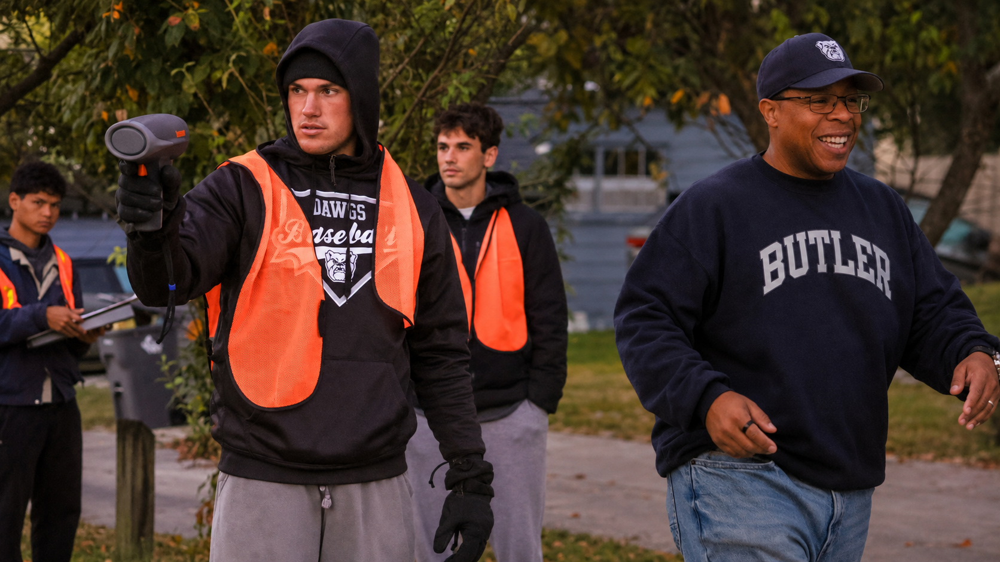

October 2026
Vision Zero Fieldwork: Analytics in the Community
46th Street near the Monon TrailCity of Indianapolis DPWHealth by Design
Business Technology & Analytics students in Dr. Jason Davidson's Data Analytics & Business Modeling class partnered with the City of Indianapolis Department of Public Works and Health by Design to support Vision Zero. Students collected field data around a temporary street-design project, examining how changes such as barriers, painted bike lanes, and street murals may affect drivers, cyclists, and pedestrians.